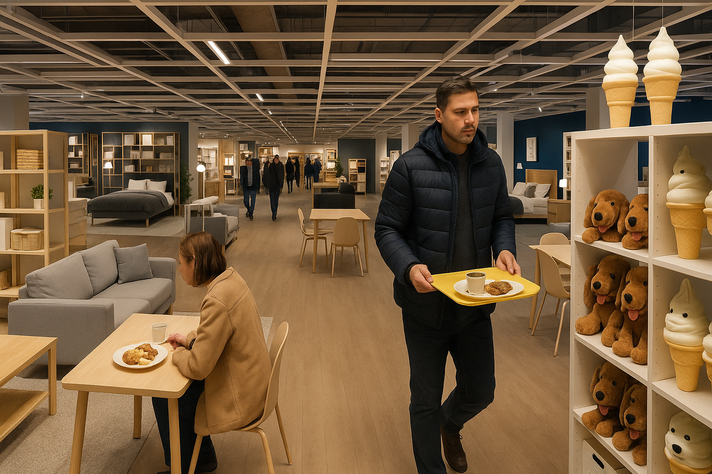
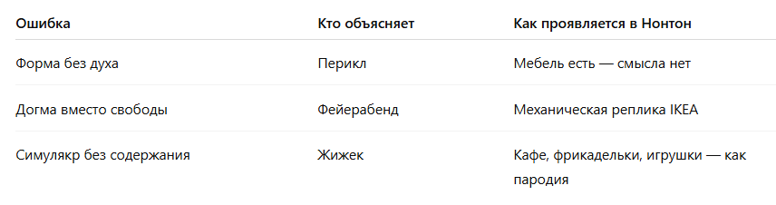

или когда магия IKEA стала инсталляцией
Год назад в большом мебельном центре Кубатура в Санкт-Петербурге открылся магазин Нонтон, явно вдохновлённый IKEA: те же зонированные пространства, те же фрикадельки в кафе, те же мягкие игрушки, знакомые до боли. Но у меня есть ощущение после посещения этого магазина, что всё это как будто: какое-то всё не настоящее, не живое, как будто ты попал в декорации. В это пространство не хочется вернуться.
Почему так?Всё вроде бы сделано правильно, но ощущение непопадания в суть преследует с первой минуты. В этой моей статье я делаю разбор трёх ключевых ошибок, которые по моему оценочному мнению совершает Нонтон, пытаясь быть IKEA, но становясь её бледной симуляцией.

1. Форма без духа или ошибка по Периклу
Перикл, стратег и мыслитель золотого века Афин, говорил:
«Мы не учимся у них — они учатся у нас».
Эта формула не про гордыню, а про силу уникальной идентичности. Икея была такой. Она строила свою модель: от философии равенства и простоты до особой этики вещей.
У Нонтона форма есть: залы оформлены в стиле ИКЕИ, развеска и маршруты похожи, кафе предлагает фрикадельки. Но увы - все эти элементы оторваны от контекста, в котором они имели смысл; нет философии, нет ощущения заботы, нет внутренней логики.
Это копия без духа!Это всё равно что надеть костюм философа и думать, что стал мудрецом.
Что делает Икея:
- Строит среду: место, куда хочется прийти даже без цели;
- Устраивает кафе не ради еды, а как часть ритуала принадлежности;
- Продаёт не мебель, а образ жизни, автономность, достоинство повседневности.
Что делает Нонтон:
- Копирует визуал (фрикадельки, зонирование, игрушки), но не понимает смысл этих элементов;
- Не формирует нарратив и внутреннюю философию.
Ошибка: Икея — это система смыслов, а не выставка.Нонтон стал выставкой, не став Икеей.
2. Следование догме вместо свободы или ошибка по Фейерабенду
Философ науки Пауль Фейерабенд считал, что любая догматичность разрушает мышление. Его знаменитая фраза:
«Anything goes» — всё подходит, если работает.
Но он не имел в виду: «копируй, не думая». Он имел в виду: ищи свой способ. Икея придумала себя с нуля. Её формат — это не заимствование, а воплощение альтернативного подхода к быту, потреблению, жизни. Нонтон же берёт этот готовый формат как «правильный», не адаптируя его под время, место и культурный контекст. Разбавление элементами Леруа не создает свой способ, а делает взвесь 1,5 чужих способов.
Это догматическое копирование, не творчество.Икея — это было решение шведской проблемы уюта и демократичности. А что решает Нонтон в 2025 году в Питере? Ответа нет, точнее сказать, я его не увидел и никто из тех, с кем я общался, не смог мне это сказать.
Что делает Икея:
- Придумывает собственные правила: от системы самообслуживания до логики движения в магазине;
- Отказывается от локальных привычек в пользу универсального, но переосмысленного стандарта.
Что делает Нонтон:
- Слепо следует IKEA, думая, что тот формат можно вставить в любую культурную рамку;
- При этом не адаптирует смысл под новую аудиторию и контекст (например, для Питера, пост-IKEA, пост-ковида и проч.).
Ошибка: Копирование — это не свобода, а новая догма. Нонтон — это IKEA без воли и дерзости.
3. Симулякр без содержания ошибка по Жижеку
Славой Жижек, философ постмодерна, сказал бы:
«Вы не покупаете мебель. Вы покупаете образ жизни, в котором эта мебель становится ритуалом, актом самоопределения».
У IKEA всё — это ритуал субъективности. Поставить светильник, собрать шкаф, зайти за мороженым — всё это поступки, через которые человек строит себя.
Что делает Нонтон? Он выставляет на полки объекты. И добавляет к ним псевдознаки: вот мороженое, вот «стоячие» столики, вот игрушки. Но смысл не в мороженом, а в том, что ребёнок ест его наравне со взрослыми, сидя в пространстве, где никто не выше.
Смысл не в игрушке, а в том, что взрослый тоже может взять её в руки и не стесняться.
В магазине Нонтона всё это - реквизит без пьесы.Симулякр без оригинала.Инсталляция без жизни.
Что делает Икея:
- Продаёт мечту об устройстве собственной жизни;
- Использует пространство и продукты как вход в этическую систему: честный труд, равенство, простота.
Что делает Нонтон:
- Реплицирует предметы и атмосферу, но не создаёт экзистенциального клея: у покупателя не возникает чувства «дома»;
- Кафе с фрикадельками и мягкие игрушки - это бутафория, не «магия IKEA».
Ошибка: Нонтон - это «Тут как будто Икея, но на самом деле нет». Ты чувствуешь подделку телом, ещё до того как осознаешь умом.
Почему в магазин Нонтона не хочется возвращаться?
- Там нет повествования, которое делает тебя героем.
- Там нет идентичности, к которой хочется принадлежать.
- Там нет повода зайти просто так, без намерения купить — а в IKEA именно такие заходы были главными.
Магазин Нонтона в Кубатуре стал одновременно бледной тенью ИКЕИ, догматической калькой и постмодернистским симулякром. Кто-то скажет: «Главное — цена и ассортимент». Но в эпоху, когда смыслы важнее функций, и пространство — это часть жизни, Икея побеждала не мебелью. Она побеждала миром, который создавала вокруг мебели.
А Нонтон - это просто выставка: красивая, с фрикадельками, но пустая(без смыслов).
